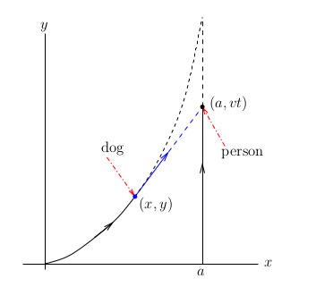
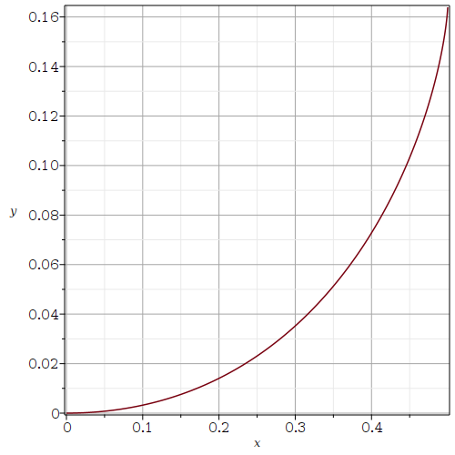
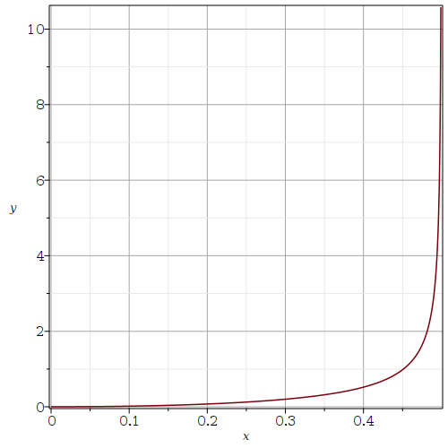

Second Order ODE with Variable Coefficients
Consider the second order ODE with variable coefficients
\[ \frac{\text{d}^2 x}{\text{d} t^2} + \cos(t)\, x = 0 \ . \]It is defined in Maple as it follows.
> ODE:=diff(x(t),t$2) + cos(t)*x(t)=0;\[ ODE := \frac{\partial^{2}}{\partial t^{2}}\, x(t) + \cos(t)\,x(t)=0 \]
To solve this ODE with the initial conditions \(x(0)=0\) and \(x'(0)=1\), we proceed as it follows.
> ODEic:= { ODE } union {x(0)=0,D(x)(0)=1};
\[
ODEic := \left\{ \frac{\partial^{2}}{\partial t^{2}}\,
x(t) + \cos(t)\,x(t)=0, \,x(0)=0, \,\text{D}(x)(0)=1 \right\}
\]
> dsolve(ODEic,x(t));\[ x(t) =2\, MathieuS\left(0,-2,\frac{t}{2} \right) \]
The answer given by Maple is in terms of the Mathieu function MathieuS(a, q, s). This is a power series solution of the Mathieu ODE
\[ \frac{\text{d}^2 x}{\text{d} t^2} + (a - 2 q \cos(2 s)) u = 0 \, . \]Assuming that we do not want to spend a lot of time studying this special function, we may simply ask Maple to give a power series solution of the ODE above with the initial conditions \(x(0)=0\) and \(x'(0)=1\).
> Order:=14; dsolve(ODEic,x(t),type='series');\[ \begin{split} & Order := 14 \\ & x(t) = t-1/6\,t^{3}+1/30\,t^{5}- \frac{19}{5040}\,t^{7}+ \frac{29}{72576}\,t^{9} -\frac {713}{19958400}\,t^{11} +\frac{3539}{1245404160}\,t^{13} +O\left(t^{14}\right) \end{split} \]
The command Order :=14 set the order of the power series solutions that Maple will provide. By default, Order is equal to \(6\). To get some information on the integration methods used by Maple, we can use the command infolevel[dsolve]:=3 before using the function dsolve(). The normal Level is 1. It can go up to level 5.
Since the solution in terms of the Mathieu function or the power series solution are not simple expressions, we may as well numerically solve the ODE above with the initial conditions \(x(0)=0\) and \(x'(0)=1\).
> xs:=dsolve(ODEic, x(t),type=numeric, output=procedurelist, method=rkf45, range=0..3*Pi);\[ xs := \text{proc}\left(x\_rkf45\right)...\text{end proc} \]
If we evaluate this function at a point \(t=a\), then we get the list \(a, x(a) , x'(a) \) as shown below.
> xs(2.5);\[ \left[ t=2.5, \,x(t)=1.811145669678303, \,{\frac{\text{d}}{\text{d} t}}\, x(t)=1.107676186986299\right] \]
We can use xs to plot the graphs of \(x\) and \(x'\).
> with(plots): > odeplot(xs,[t,x(t)],0..3*Pi,axes=BOXED,labels=[`t`,`x(t)`],refine=2, gridlines=true);

> odeplot(xs,[t,diff(x(t),t)],0..3*Pi,axes=BOXED,labels=[`t`,`x'(t)`],refine=2, gridlines=true);

We may also plot a part of the orbit \(\{ (x(t), x'(t)) : t \in \mathbb{R} \}\).
> odeplot(xs,[x(t),diff(x(t),t)],0..3*Pi,axes=BOXED,labels=[`x(t)`,`x'(t)`],refine=2, gridlines=true);

Just by looking at the figures above, could we predict the behaviour of \(x(t)\) and \(x'(t)\) as \(t\) converges to \(\infty\)? Vary the length of the interval of integration and observe what happen to the graphs.
Example: A friendly dog is running after a person. The dog starts running from the origin when the person crosses the \(x\)-axis. The person walks in a straight line at a speed of \(v\) km/hr as illustrated in the figure below.

The direction of the dog is always toward the person. Moreover, the dog runs at a constant speed of \(v_d\) km/hr. The position of the dog is described by a differential equation that we are going to deduce below.
Since the dog is always running toward the person, we have that
\[ \frac{\text{d}y}{\text{d}x} = \frac{y-v t}{x-a} \ . \]Since the speed \(v_d\) at which the dog run is constant, we also have that
\[ v_d = \left( \left( \frac{\text{d}x}{\text{d}t} \right)^2 + \left( \frac{\text{d}y}{\text{d}t} \right)^2 \right)^{1/2} = \frac{\text{d}x}{\text{d}t} \left( 1 + \left( \frac{\text{d}y}{\text{d}x} \right)^2 \right)^{1/2} \ , \]where we have deduced from the figure above that the derivatives of \(x\) and \(y\) with respect to \(t\) are positive. If we derive the equation \(\displaystyle (x-a) \frac{\text{d}y}{\text{d}x} = y-v t\) with respect to \(t\), then we get
\[ (x-a) \frac{\text{d}^2y}{\text{d}x^2} \frac{\text{d}x}{\text{d}t} + \frac{\text{d}y}{\text{d}x} \frac{\text{d}x}{\text{d}t} = (x-a) \frac{\text{d}^2y}{\text{d}x^2} \frac{\text{d}x}{\text{d}t} + \frac{\text{d}y}{\text{d}t} = \frac{\text{d}y}{\text{d}t} - v \ . \]Thus
\[ (x-a) \frac{\text{d}^2y}{\text{d}x^2} = -v\, \left(\frac{\text{d}x}{\text{d}t}\right)^{-1} = -\frac{v}{v_d} \left( 1 + \left( \frac{\text{d}y}{\text{d}x} \right)^2 \right)^{1/2} \ . \]This is not the type of second order ODE that we can solve with the usual techniques taught in courses on ODE. In particular, this is a nonlinear ODE. We will therefore solve it numerically. We assume that \(a= 0.5\) km, \(v = 3\) kn/hr and \(v_d = 10\) km/hr.
> restart: with(plots):
equ := vd*(a-x)*diff(y(x),x$2) = v*(1 + ( diff(y(x),x))^2)^(1/2);
equP := subs({a=0.5, v=3, vd=10},equ);
solP := dsolve({equP, y(0)=0, D(y)(0)=0},y(x),type=numeric,output=procedurelist,
method=rkf45, range=0..0.499);
odeplot(solP, 0..0.499,axes=BOXED,labels=[`x`,`y`],refine=2,gridlines=true);
\[
\begin{split}
& equ := vd\,(a - x) \left( \frac{\text{d}^2}{\text{d}x^2} y(x)\right)
= v\,\sqrt{1 + \left(\frac{\text{d}}{\text{d} x} y(x) \right)^2} \\
& equP := 10\,(0.5 - x) \left( \frac{\text{d}^2}{\text{d}x^2} y(x)\right)
= 3\,\sqrt{1 + \left(\frac{\text{d}}{\text{d} x} y(x) \right)^2} \\
& solP := \text{proc(x\_rkf45) \ldots end proc}
\end{split}
\]

We integrate the ODE up to \(x = 0.499 \) because \(\displaystyle \frac{\text{d}}{\text{d} x} y(x) \to \infty\) as \(x \to 0.5\) where, in theory, the dog catch up with the person.
What happen if we have a very small dog or a lazy dog that runs only at \(2\) km/hr? We now have that \(a= 0.5\) km, \(v = 3\) kn/hr and \(v_d = 2\) km/hr.
> equP := subs({a=0.5, v=3, vd=2},equ);
solP := dsolve({equP, y(0)=0, D(y)(0)=0},y(x),type=numeric,output=procedurelist,
method=rkf45, range=0..0.499):
odeplot(solP, 0..0.499,axes=BOXED,labels=[`x`,`y`],refine=2,gridlines=true);
\[
equP := 2\,(0.5 - x) \left( \frac{\text{d}^2}{\text{d}x^2} y(x)\right)
= 3\,\sqrt{1 + \left(\frac{\text{d}}{\text{d} x} y(x) \right)^2}
\]

In this case, the dog will never reach the person if we assume that this person is going to walk at the same speed for ever.
For the rest of this document, we consider two classical second order ODE with variable coefficients: the Cauchy-Euler equation and the Bessel equation. There are many more but these two ODE are really important.
Cauchy-Euler Equation
The Cauchy-Euler equation is
\[ x^2 y''(x) + b x y'(x) + c y(x)=0 \]where \(b\) and \(c\) are constants. This ODE is defined in Maple as it follows.
> eq1 := x^2*diff(y(x),x$2) + b*x*diff(y(x),x)+c*y(x)=0;\[ eq1 := x^2 \left( \frac{\text{d}^2}{\text{d} x^2} y(x) \right) + b x \left( \frac{\text{d}}{\text{d} x} y(x)\right) + c y(x) = 0 \]
The form of the solutions of this ODE depend on the values of the parameters \(b\) and \(c\). The basic idea to find the solutions of this ODE is to suppose that a solution of this ODE is of the from \(\displaystyle y(x) = x^r\). If we substitute this expression in the ODE, we get the following equation.
> eq2 := eval( subs(y(x)=x^r, eq1) );\[ eq2 := x^2 \left( \frac{x^r r^2}{x^2} - \frac{x^r r}{x^2} \right) + b x^r r + c x^r = 0 \]
After dividing both sides of the equality by \(x^r\), we get the following equation.
> simplify( eq2/x^r );\[ r^2+ (b-1) r+c = 0 \]
The indicial equation of the Cauchy-Euler equation is \(\displaystyle r^2+(b-1)r+c=0\). The solutions of the Cauchy-Euler equation depend on the roots of the indicial equation.
Note: The Cauchy-Euler equation can be reduced to the second order linear ODE with constant coefficients \(\tilde{y}''(t) +(b-1) \tilde{y}'(t) +c \tilde{y}(t) = 0\) with the substitution \(\displaystyle x = e^t\). If \(t \mapsto \tilde{y}(t)\) is a solution of this ODE, then \(x \mapsto y(x)= \tilde{y}(\ln(x))\) is a solution for the Cauchy-Euler equation. The indicial equation of the Cauchy-Euler equation is the characteristic equation for the second order linear ODE with constant coefficients. It therefore follows that there are three types of solutions for the Cauchy-Euler equation as it is so for the second order linear ODE with constant coefficients.
- \(\displaystyle y(x) = c_1 x^{r_1} + c_2 x^{r_2}\) if the indicial equation has two distinct real roots, \(r_1\) and \(r_2\).
- \(\displaystyle y(x) = c_1 x^r + c_2 x^r \ln(x)\) if the indicial equation has only one real root, \(r\).
- \(\displaystyle y(x) = c_1 x^a \cos(b\ln(x)) + c_2 x^a \sin(b\ln(x))\) if the indicial equation has a pair of complex conjugate roots, \(a \pm b i\) with \(b \neq 0\).
Example: Suppose that b=c=1 in the Cauchy-Euler equation.
> eq3 := subs({b=1,c=1},eq1);
\[
eq3 := x^2 \left( \frac{\text{d}^2}{\text{d} x^2} y(x) \right)
+ x \left( \frac{\text{d}}{\text{d} x} y(x)\right) + y(x) = 0
\]
The indicial equation is \(r^2 + 1 = 0\) and has two distinct complex roots; namely, \(\pm i\). Maple gives the following general solution for this ODE.
> dsolve(eq3 ,y(x));\[ y(x) = \_C1 \sin(ln(x)) + \_C2 \cos(ln(x)) \]
This is the expected general solution.
Boundary value Problems for ODE
To study some partial differential equations (PDE), it is important to study Boundary Value Problems for the Cauchy-Euler equation.
Example: Consider the Cauchy Euler equation with b=c=1 and the boundary conditions \(y(1)=1\) and \(y(3)=2\). In theory, we have to find the values for the constants \(c_1\) and \(c_2\) in the general solution of the Cauchy-Euler equation such that these boundary conditions are satisfied. The function dsolve( ) can do that for us.
> dsolve({ eq3,y(1)=1,y(3)=2},y(x));
\[
y(x) = -\frac{(-2+\cos(\ln(3))) \sin(ln(x))}{\sin(\ln(3))} + \cos(\ln(x))
\]
Example: Suppose now that \(-b=c=1\) in the Cauchy-Euler equation.
> eq4 := subs({b=-1,c=1},eq1);
\[
eq4 := x^2 \left( \frac{\text{d}^2}{\text{d} x^2} y(x) \right)
- x \left( \frac{\text{d}}{\text{d} x} y(x)\right) + y(x) = 0
\]
The indicial equation is \((r-1)^2 = 0\). There is a single real root. This root is \(r = 1\). As expected, the general solution is the following one.
> dsolve(eq4 ,y(x));\[ y(x) = \_C1 x+ \_C2 x \ln(x) \]
If we solve the Cauchy-Euler equation with the same boundary conditions than before, we get the following solution.
> dsolve({eq4,y(1)=1,y(3)=2},y(x));
\[
y(x) = x - \frac{x \ln(x)}{3 \ln(3)}
\]
Hence, we have \(c_1 = 1\) and \(\displaystyle c_2 = -(3\ln(3)^{-1}\).
Bessel Equation
We now consider the Bessel equation
\[ x^2 y''(x) + x y'(x) + (x^2-p^2) y(x)=0 \]where \(p\) is a constant. This ODE is defined in Maple as it follows.
> eq5 := x^2*diff(y(x),x$2)+x*diff(y(x),x) + (x^2-p^2)*y(x)=0;\[ eq5 := x^2 \left( \frac{\text{d}^2}{\text{d} x^2} y(x) \right) + x \left( \frac{\text{d}}{\text{d}x} \right) y(x) + (-p^2 + x^2) y(x) = 0 \]
The indicial equation of the Bessel equation is \(r^2-p^2 =0\). We will not present the theory that leads to this indicial equation but we will only mention that power series solutions are needed to deduce the indicial equation. The indicial equation has two distinct roots when \(p \neq 0\). The general solution is given below.
> dsolve(eq5,y(x));\[ y(x) = \_C1 BesselJ(p,x) + \_C2 BesselY(p,x) \]
BesselJ(p,x) is the Bessel function of the first kind of order \(p\) and BesselY(p,x) is the Bessel function of the second kind of order \(p\). The Bessel functions of the first kind can be expressed as a power series at the origin but the Bessel functions of the second kind cannot. The origin is a singularity for the Bessel functions of the second kind.
We can use Maple to get the first terms of the power series expansion of the Bessel function of the first king of order \(0\) at the origin.
> taylor(BesselJ(0,x),x=0,8);\[ 1 - \frac{1}{4} x^2 + \frac{1}{64} x^4 - \frac{1}{2304} x^6 + O(x^8) \]
The graphs of the Bessel functions of the first kind of order \(0\) and \(1\) are drawn below.
> with(plots):
> J0 := plot(BesselJ(0,x),x=0..10, color="red"):
> J1 := plot(BesselJ(1,x),x=0..10, color="blue"):
> display({J0,J1});

Except for the Bessel functions of the first kind of order \(0\) that takes the value \(1\) at the origin, all the Bessel functions of the first kind are \(0\) at the origin.
The graphs of the Bessel functions of the second kind of order \(0\) and \(1\) are drawn below.
> Y0 := plot(BesselY(0,x),x=0.1..10, color="red"):
> Y1 := plot(BesselY(1,x),x=0.1..10, color="blue"):
> display({Y0,Y1});